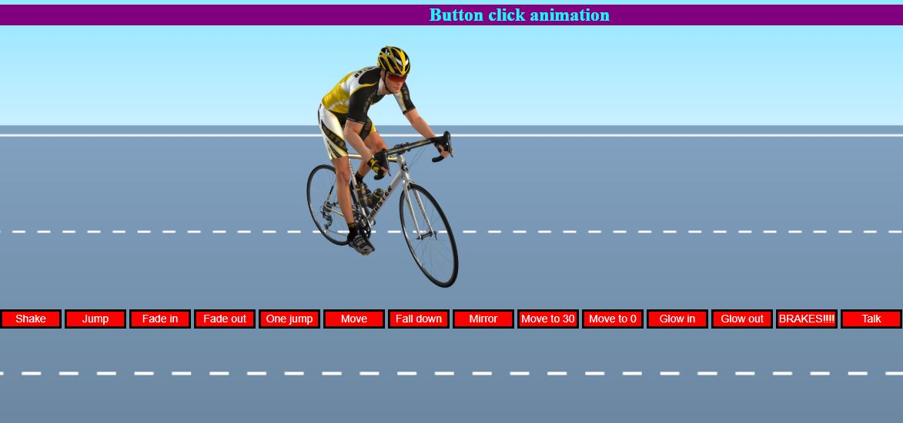
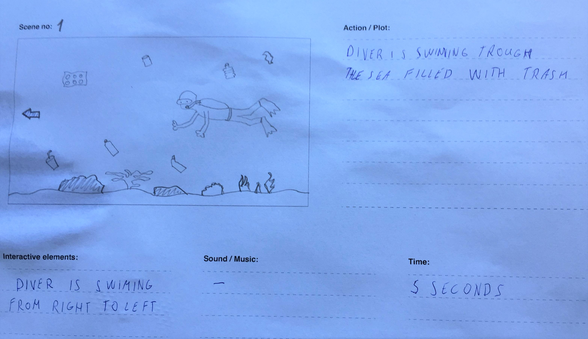
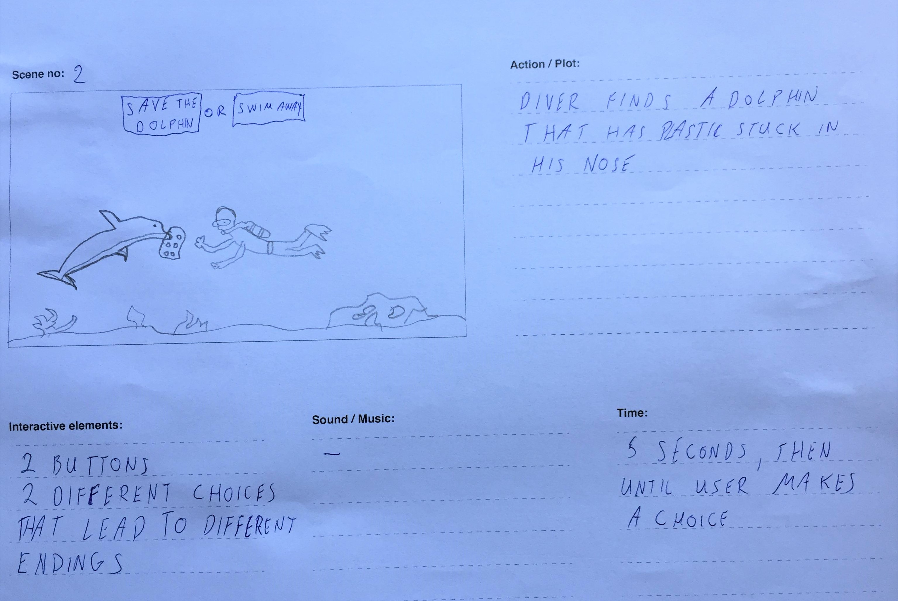
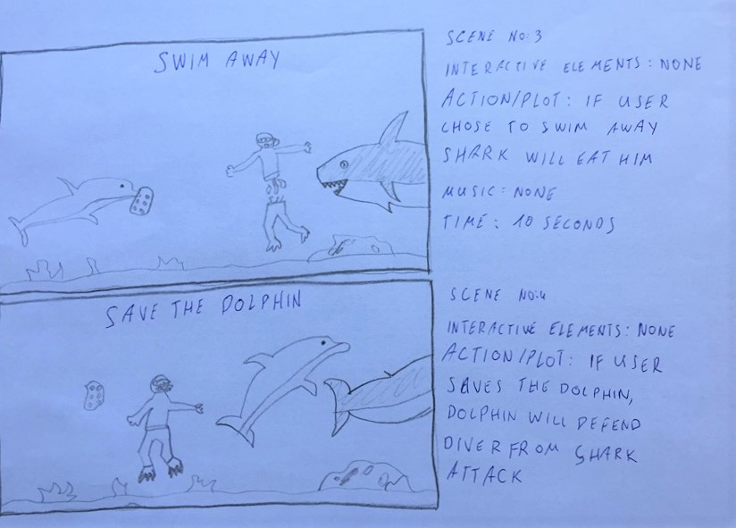
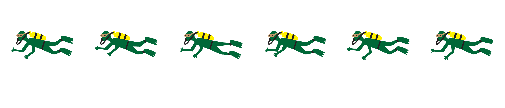

02.01.02. Simple animation
For the first animation project we had to create a simple animation using HTML, CSS and JavaScript. Animation involves a character and button which controls the animation. My number one hobby is cycling so I chosen a cyclist png image that moves, jumps and does all kind of stuff when button is clicked by user. This was my first interaction with JavaScript and animation. I enjoyed learning basics of animating with keyframes and learning cool tricks that can be implemented into any website.
Click HERE to see the website 02.02.01 Week submission_part one_ part two_part three
"Our Planet"
I call this animation "Our Planet". I was insired to create awareness about ocean polution after seeing video on facebook. If we don't have our consumer habits by the year 2050 there will be more plastic in the ocean than fish. That is crazy, right?
This animation begins with diver swimming trough poluted ocean filled with plastic. In the next scene he finds a dolphin who's nose got stuck in 6-pack beer can plastic. Now the user can choose to interact and decide if he wants to help dolphin or swim away. In the final scene diver gets attacked by a shark and if user saved the dolphin before, the dolphin will return the favour by scaring out the shark. If user did not save the dolphin the shark will eat the diver.
This planet is our home and we only have one chance at saving it. So why not start from chaning your consumer habits and making our home cleaner.
Part One: Story + Storyboard
  Part Two: Style tyle + worksheet
For my style I chosen flat design. My goal was to create simple cartoonish looking characters. There are three characters in the story: diver, dolphin and shark. Diver is the main character. He is an "average joe" someone who rents a diving gear to go on deep ocean adventure. Someone who never thought about the ocean polution situation. At the end the user decides what kind of character he is: good or bad. In live we have action and consequences, so user's choice creates a specific ending for this story.
02.04.06 Link to Final Interactive Production
Link to final productIn this project my biggest challenge was to make a keyframe animation using sprite sheet. The diver shoul leave the page ad disappear but instead the image appears again. I am looking forward to gaining more coding skills and fixing this issue.